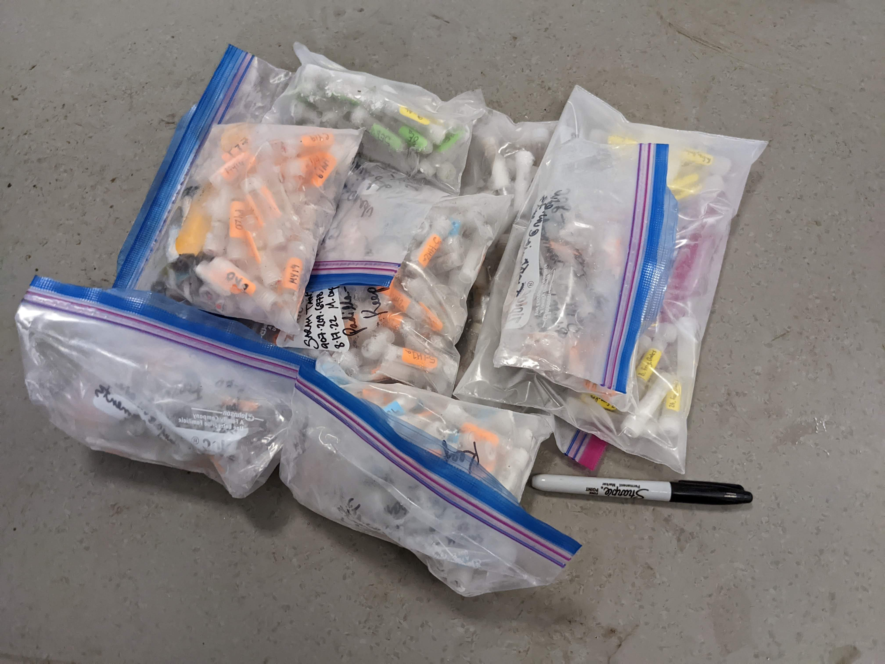
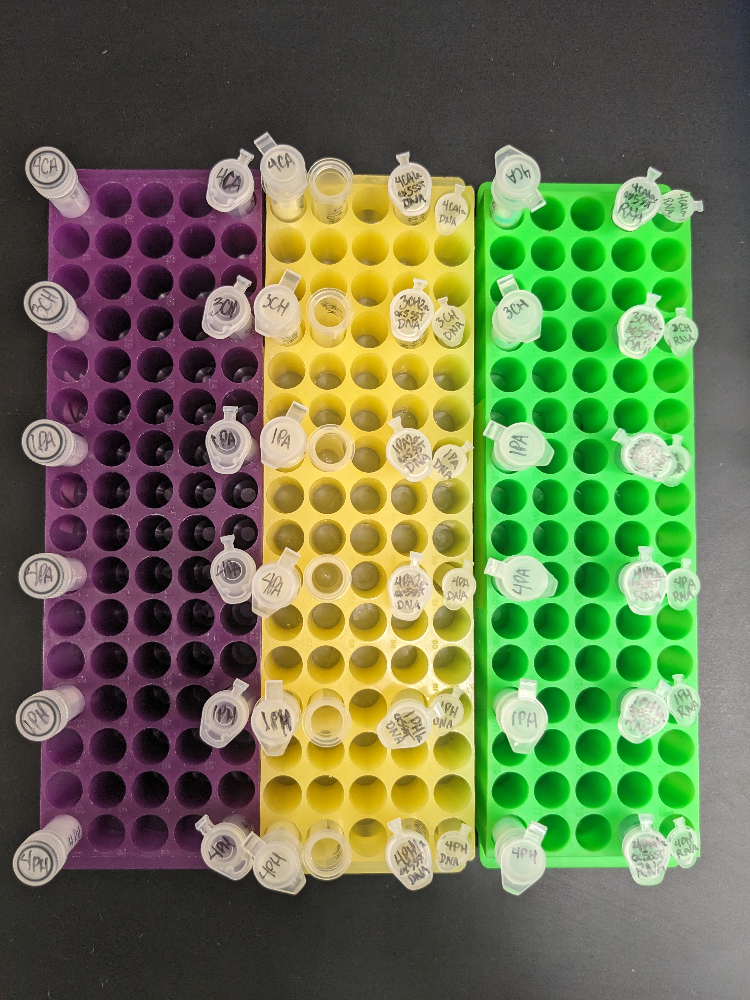

flowchart LR
subgraph Lysing
A[LN2 dewer<br> <br>dry-ice bucket] --> B((mortar & pestle))
B --> C[[lysing<br> <br>tube<br> <br>rack]]
end
subgraph Purification
C --> D[[DNA<br> <br>tube<br> <br>rack]]
D --> E[[RNA<br> <br>tube<br> <br>rack]]
end
classDef green fill:#9f6,stroke:#333,stroke-width:2px;
classDef yellow fill:#ff0,stroke:#333,stroke-width:2px;
classDef purple fill:#993399,stroke:#333,stroke-width:2px;
classDef white fill:#ffffff,stroke:#333,stroke-width:4px;
classDef grey fill:#999999,stroke:#333,stroke-width:4px;
class E green
class D yellow
class C purple
class B white
class A grey
The aim of this protocol is to take coral fragments that have been snap-frozen in liquid nitrogen and extract both DNA for downstream archaea & bacteria microbiome 16S Microbiome Sequencing and RNA for downstream coral-host tissue Tag-seq or RNA-seq analysis.
In plain, I want to answer ‘who is there?’ regarding the bacterial community, and ‘what is the coral doing?’ regarding gene expression.
The benefits of doing DNA and RNA extraction together are that it saves time, money, & sample material. It also facilitates paired sample analysis, where each data point in one dataset is uniquely paired to a data point in the second dataset because we are making duplicate measurements on the same sample.
The challenge is lysing the sample enough to get the bacterial DNA (busting open all those layers of cell membranes!) and retaining host (coral) RNA integrity.
This protocol follows the Zymo Research Quick-DNA/RNA Mininprep Plus Kit Instruction Manual with help and optimization from URI Putnam Lab Members Open Lab Notebook posts; such as Emma Strand’s notebook post on Zymo-Duet-RNA-DNA-Extraction-Protocol, Kevin Wong’s post on Porites Extractions and M.E. Schedl’s post on Porites Extractions, as well as suggestions from a Zymo tech on March 28th 2023 regarding optimized lysis protocols and suggestions from a Zymo tech on May 15th 2023 regarding optimized Proteinase K digestion temperature. This protocol was updated again in August 2023 after initial RNA samples failed library prep1 and DNA sample analysis showed high contamination present in the blank.
1 See my post The RNA Inhibitors to learn more on this misadventure…
📞 Zymo is very responsive to phone calls! Any questions on the kit you can call 888-882-9682 and reference catalog number D7003 to ask technical questions galore.
For useful background on spin-column kits:
Advanced Prep
Biological Sample Info
The samples I am working with are liquid-nitrogen snap-frozen ~3cm Montipora capitata coral fragments held at -80°C, in 1.5mL cryovials. The samples are fragments of coral that had been exposed to the multiple stressors of thermal stress and phthalate pollution in 20mL mesocosms for 48 hours.


Materials List
Kits & Tubes
- Zymo Research Quick-DNA/RNA Miniprep Plus Kit (50 prep D7003, or 10 prep D7003T) 1 prep = 1 sample that results in DNA in one tube, and RNA in another
- ZR BashingBead Lysis 2mL Tubes with 0.1 & 0.5mm beads, 1 per prep
- DNase/RNase-Free Tubes, 4 per prep (plus extras)
- RNA Clean & Concentrator-5, DNase not Included2
2 RNA Clean & Concentrator-5 is used to further clean-up and concentrate your extracted RNA samples of low purity readings
Standards
Qubit DNA & RNA Broad-Range Assay Kits (needed for the next step of DNA & RNA quantification!)
- Qubit® assay tubes(Invitrogen Cat. no. Q32856, 500 tubes) or Axygen PCR-05-C tubes(VWR, part number 10011-830).
- Qubit™ 1X dsDNA Broad Range (BR) Assay Kit
- Qubit™ RNA High Sensitivity (HS) or Broad Range (BR) Assay Kit
PPE
- nitrile gloves
- liquid-nitrogen & cold storage handling gloves
- lab coats
Lab Equipment
- ethanol-proof lab markers
- 1.5mL microcentrifuge tube racks
- lab mortar & pestle sets
- lab label tape
- mini stainless steel funnels
- stainless steel scoopulas
- film-sealing plate roller
- centrifuge
- Beckman Coulter Microfuge 16
- mortexer / homogenizer
- Mortexer Vortex Mixer with …OR…
- Vortex Genie 2 with Horizontal Microtube Holder (recommended by Zymo optimized lysis protocols)
- liquid-nitrogen (stored in dewer or tank)
- small liquid-nitrogen thermos (1L)
- small cooler (for dry ice and samples)
- dry-ice
- Dry-ice at UW can be purchased via a budget# at the Biochemistry Store in hallway adjacent to Room J-014, Health Sciences Building
- The entrance can be found at the Health Sciences Building loading dock across NE Boat St. from Saint Bread, NE of the Ocean Sciences Building
- You must have UW Husky Card to fob-activate doors leading from loading dock and interior hall
- Bring a well-insulated foam or hard cooler. First weigh empty cooler, add dry-ice, then weigh again and record final weight, budget#, PI, and name on the clipboard near the dry-ice station
Reagents
I previously used DEPC-treated water to dilute the 2X concentrated DNA/RNA Sheild, thinking this was the same thing as nuclease-free water. It Isn’t! and this may have been a source of contamination in my initial blank microbiome sample!
The nuclease-free water is used to dilute 2X concentrated DNA/RNA Shield. It is very important for microbiome studies that this water does not have any bacterial contamination!
“…extraction kits have a good amount of background (as does every reagent including the water you used… about the only reagent that does not have some background is the qiagen DNA free water… the 16s is extremely sensitive and a water extraction is VERY pure DNA so amplifies very well.” - Advice via email from Dr. Scot Dowd, Mr DNA Lab
- Qiagen nuclease-free water
- 99.5% (200 proof) molecular-grade ethanol
Sterilizing
- 10% bleach in spray-bottle
- 70% ethanol in spray-bottle
- DI water in spray-bottle
- RNase away in spray-bottle
- Kimwipes/paper towels
Pipettes & Tips
- P10 + filtered tips DNase/RNase free
- P100 + filtered tips DNase/RNase free
- P1000 + filtered tips DNase/RNase free
- P5000 + tips (for buffer prep)
Randomize Sample Processing
Make sure to randomize which samples are processed in each batch of extractions to reduce ‘batch effects’!
See ‘Randomize Sample Processing’ script for how I randomized sample processing.
Think about how many samples you can process at once, and your kit, centrifuge, and homogenizer capacity. You should also make sure to include a blank and a mock community for downstream analysis. 1 blank and 1 mock community extraction per analysis will suffice for a study like this one, which is focusing on the differences between treatments (and not focusing on the absolute numbers of bacteria in the samples)
Lab Setup
Sterilize
Don lab coat 🥼 & tie hair back , glove up 🧤
Spray down
benchtop,microcentrifuge tube racks,pipettes, andpipette tip boxeswith:10% bleachin spray-bottle, then wipe with KimwipeDI waterin spray-bottle, then wipe with Kimwipe70% ethanolin spray-bottle, then wipe with Kimwipe
Spray down
mortars & pestles,scoopulas, andforcepswith:10% bleachin spray-bottle, then wipe with KimwipeDI waterin spray-bottle, then wipe with Kimwipe70% ethanolin spray-bottle, then wipe with KimwipeRNase awayin spray-bottle, then wipe with Kimwipe
Spray Kimwipe with
RNase awayand wipe down equipment buttons/handles/surfaces that may have been touched by ungloved handsSpray
RNase awayon gloves and rub hands together
Arrange Lab Bench + Tubes
Lysing Station
- liquid nitrogen dewer
- dry-ice bucket with ❄️samples, ❄️scoopulas, & ❄️mini funnels4
- forceps
- mortars & pestles
- mortexer
4 Placing the scoopulas and mini funnels on dry ice gets them cold to the same temperature as the powdered coral samples after grinding them in the mortar. This allows you to scoop the powder and have it remain cold❄️ while you transfer it as a cold dry powder through the funnel into the bead-bashing tube. If the scoopula and funnel are room temperature, when they touch the cold powdered sample they condensate and the sample gets wet and booger-like in consistency, making it impossible to transfer into the bead-bashing tube.
Purification Station
- centrifuge
- microcentrifuge tube racks
- pipettes
- pipette tips
I tend to arrange my workflow left to right:
Make sure you have trash, pipette disposal, and liquid kit waste disposal containers within easy reach of the bench.
Label Tubes
- pick out three microcentrifuge tube racks:
flowchart LR
C[[lysing<br> <br>tube<br> <br>rack]]
C --> D[[DNA<br> <br>tube<br> <br>rack]]
D --> E[[RNA<br> <br>tube<br> <br>rack]]
classDef green fill:#9f6,stroke:#333,stroke-width:2px;
classDef yellow fill:#ff0,stroke:#333,stroke-width:2px;
classDef purple fill:#993399,stroke:#333,stroke-width:2px;
class E green
class D yellow
class C purple
- For each sample, arrange the following tubes in microcentrifuge tube racks:
bead-bashing tube
nuclease-free tube for proteinase K digestion
nuclease-free tube for addition of Lysis Buffer
DNA Spin-Away Filter (yellow) in a Collection Tube (Quick-DNA/RNA Miniprep Plus)
Collection Tube (Quick-DNA/RNA Miniprep Plus)
nuclease-free tube for eluted DNA
Qubit assay tube for 1uL of eluted DNA
RNA Spin-Away Filter (green) in a Collection Tube (Quick-DNA/RNA Miniprep Plus)
nuclease-free tube for eluted RNA
Zymo Spin IC Column in a Collection Tube (RNA Clean & Concentrator-5)
nuclease-free tube for eluted purified RNA
Qubit assay tube for 1uL of eluted RNA

Only thin-wall, clear 0.5 mL PCR tubes are appropriate for use in the Qubit® fluorometer. Acceptable tubes include Qubit® assay tubes (Invitrogen Cat. no. Q32856, 500 tubes) or Axygen PCR-05-C tubes(VWR, part number 10011-830).
The qubit tube should only be labelled on the top; the sides should be clear so that the qubit fluorescence can be read without impedance.
The intermediate tubes and qubit tubes can just be labelled with the cryo_id, and whether they are RNA or DNA products such as: 1Ea DNA or 2CHb RNA
Any tubes that will be kept should be labelled with cryo_id, DNA/RNA, extraction_id, date (ddMMMyy), & initials, such as:
1Ea
ex1 SST
RNA
10APR23- Use ethanol-proof lab markers to label tubes (ethanol is added to the green spin away collection tube)
- Label collection tubes, not filters!
- Always wear lab gloves that have been sterilized before handling tubes!
- Shake tubes out of their bags onto sterilized surface, don’t ‘reach in’ (this reduces potential contamination)
Prepare Buffers
If using the 50-prep kit (D7003), add
96 ml 100% ethanol (104 ml 95% ethanol)to the 24 ml DNA/RNA Wash Buffer concentrate. If using the 10-prep kit, DNA/RNA Wash Buffer (D7003T) is supplied ready-to-use and does not require the addition of ethanol.
Reconstitute
lyophilized DNase IwithDNase/RNase-Free Waterand mix by gentle inversion. Use immediately or store frozen aliquots.- 50-prep, add 275 µl water
- 10-prep, add 55 µl water
Reconstitute
lyophilized Proteinase Kat 20 mg/ml withProteinase K Storage Bufferand mix by vortexing. Use immediately or store frozen aliquots.- 50-prep, (60 mg), add 3.12 ml buffer
- 10-prep, (5 mg), add 0.26 ml (260 ul) buffer
To prepare a 1X solution of
DNA/RNA Shield™, add an equal volume (5mL for the whole solution) ofnuclease-free water(not provided) to theDNA/RNA Shield™(2X concentrate) (1:1) and mix with a quick pulse on the vortexer.
Extraction Steps
Grind/Homogenize: Mortar & Pestle Samples
Take dry-ice cooler to the -80 freezer, pull out frozen samples and place them in the dry-ice cooler. Work quickly and carefully to sort through the vials and select the ones that you are working with. Nest the selected sample vials in the dry ice, and return the rest back to the -80 freezer. Bring working samples on dry-ice back to the lab bench.
Place the ❄️scoopulas❄️ and ❄️mini funnels❄️ in the dry ice 🧊 bucket!
Don cryo-gloves over nitrile gloves and ⚠️carefully⚠️ dispense a small amount of liquid nitrogen (LN2) into the transfer thermos. Everyone working with LN2 should have taken the Liquid Nitrogen Online Safety Course found HERE
Grind each sample with mortar & pestle on LN2 -
- ⚠️carefully⚠️ pour a small amount of LN2 into a sterilized mortar
- Using sterilized forceps, pluck out coral fragments from the cryo vial and place in the mortar until you have about as much material as a lima bean. Material amount does not have to be precise.
- Pestle the coral fragment until it is ground to a powder5. Work quickly to ensure the sample remains frozen. Add more LN2 when it evaporates from the mortar. This step is challenging! LN2 evaporates very quickly and must be replenished multiple times.
5 The coral fragments are prone to ‘squirting out’ from under the pestle. Don’t lose sample material! Rather than use your arms to ‘stir’ the fragments in a circular motion, crush the fragments by firmly placing the pestle square atop a fragment and press your whole torso body-weight onto the pestle. Think like a hydraulic press!
Lyse: Bead-Bash Samples
- Add 500uL of
DNA/RNA Shieldto each 2mL (0.1 - 0.5mm) bead-bashing tube
In initial extractions I only used 500uL of DNA/RNA Sheild and was advised to increase it to at least 800uL by a Zymo rep:
“A minimum of 800 µl of liquid volume is what we typically recommend when working with the BashingBead Tubes. This is because anything lower may lead to inefficient bead movement during shaking, oversaturation of content, and difficulties when transferring sample from the tube without disturbing the debris. All of these can lead to impurity by precipitation/clogging in the columns, therefore we highly recommend increasing the amount of DNA/RNA Shield for processing.”
Use chilled, sterilized scoopula and a sterilized chilled mini-funnel to transfer the sample powder to its correspondingly labelled bead bashing tube
Aim to transfer 500uL of powdered volume (take up about 1/4th of the 2mL tube, or an equal volume as the beads)
Cap the bead-bashing tube and shake it like a Polaroid picture
Open the tube, and ‘top-off’ the sample with another 1000uL of
DNA/RNA Shield, bringing the total volume to 1500uLVortex to ensure powder is fully submersed in
DNA/RNA ShieldSet bead-bashing tubes in Mortexer and homogenize at high speed for 40 minutes
Proteinase-K Digestion
Get the Proteinase K out of the -20 freezer & set the heat-block to warm up to 55C for 30mins
After bead bashing, tubes are ‘intensely bubbly’, to tamp down bubbles, centrifuge in the mini-centrifuge for 1min
Transfer 600uL of supernatent to a new nuclease-free tube, making sure not to disturb beads and debris at the bottom of the bead-bashing tube6
Add Proteinase K & Buffer
Add the appropriate volume of Pro K buffer and Proteinase K (Proteinase K is stored in the -20 after being reconstituted)
(10:1 ratio of sample:digestion buffer) & (2:1 ratio of digestion buffer:Proteinase K)
For tubes with approximately 500uL of sample add:
- 50ul pro K buffer
- 25ul proteinase K
Vortex to mix
Incubate in the heat-block for 30mins at 55C
Vortex to mix & centrifuge on max for 2mins to pellet any debris
Transfer 350uL of the cleared supernatent to a new 1.5mL nuclease-free tube, making sure not to disturb any debris at the bottom of the tube
Add 350uL of DNA/RNA Lysis Buffer to the supernatent(1:1) and vortex to mix
6 Why do we transfer from the bead-bashing tube to two different nuclease-free tubes in this step? Jerry Yu from Zymo says:
“We are worried about the sample debris remaining in the tube, which should still contain protein. One of the reasons for Proteinase K treatment at this step is to break down protein in the solution to make it less viscous/sticky, so the column can process it without issue. By transferring the mixture out, the treatment could be more efficient.”
Purify DNA & RNA
Transfer the buffered supernatent (should be a total of 700uL, which can be passed through the filter in one go) to yellow Spin-Away Filter in a Collection Tube and centrifuge at 16,000xg for 30 sec
Save The flow-through in the collection tube for RNA purification! At this step the DNA is in the yellow spin column filter and the RNA is in the flow through.
Transfer the yellow Spin-Away Filter to a new Collection Tube
To the RNA flow-through, add 700uL (1:1) of 200-proof ethanol to the flow-through and mix by pipetting up and down 12 times
The RNA+ethanol volume is now 1,400uL. In aliquots up to 700uL, transfer the RNA sample to the green
Zymo-Spin IIICG Columnin aCollection Tube, centrifuge, and discard the flow-through. Dab the rim of the collection tube with a Kim Wipe to clean off any residual flow-through. This step binds the RNA to the green column filter. Repeat until all RNA Sample has passed through the filter.
DNase 1 Treatment for RNA
Add 400uL
DNA/RNA Wash Bufferto thegreen Zymo-Spin IIICG Column, centrifuge and discard the flow-throughFor each sample to be treated, prepare
DNase 1 Reaction Mix: \[ DNase\, 1\, volume = 5 \mu L * (no.\, of\, sample\, preps) \] \[ DNA\, Digestion\, Buffer\, volume = 75 \mu L * (no.\, of\, sample\, preps) \]Add 75uL of
DNA Digestion Bufferper prep to a new nuclease-free tubeAdd 5uL of reconstituted
DNase 1(thawed if previously frozen at -20C) per sample prep to the nuclease-free tubeMix by gentle inversion
Carefully drip 80uL of
DNase 1 Reaction Mixdirectly onto thegreen Zymo-Spin IIICG Columnfilter and let incubate at room temperature for 15mins
Wash & Elute
Add 400uL
DNA/RNA Prep Bufferto each column and centrifuge at 16,000xg for 30s, then discard the flow-throughAdd 700uL of
DNA/RNA Wash Buffer7to each column and centrifuge at 16,000xg for 30s, then discard the flow-throughAdd 400uL of
DNA/RNA Wash Bufferto each column and centrifuge at 16,000xg for 2mins to ensure complete removal of the wash buffer, then discard the flow-throughConduct a dry spin and centrifuge at 16,000xg for 2mins to ensure complete removal of the wash buffer prior to elution8
Carefully transfer the column into the nuclease-free tube labelled for containing the eluted DNA/RNA end products
Add 70uL
DNase/RNase-Free Waterdirectly to the column matrix and centrifuge at 16,000xg for 30sPlace eluted DNA/RNA tubes on ice to continue work, or store in the -80C freezer for later
7 Slowly dispense wash buffer along the sides of the filter like pouring a heady beer down the side of a pint glass. Jerry Yu from Zymo says:
“You are correct with the beer analogy. By slowly dispensing wash buffer along the inner radius of the column, you can rinse off salts/residuals from previous spins, so future spins will be cleaner.”
8 Another tip from Zymo:
The goal of rinsing and reducing the volume of wash buffer is to avoid residual buffer from previous washes to end up in the elution, which will reduce purity. If volume of the wash buffer is increased in the final wash step, make sure to also increase the centrifugation time (e.g., 2 minutes) or include a second spin without buffer (dry spin) to ensure complete removal of the buffer prior to elution.
RNA Clean-up
RNA Clean & Concentrator-5
Open the
RNA Clean & Concentrator-5kitAdd 140uL of
RNA Binding Bufferto each 70uL of eluted RNA sample (2:1,RNA Binding Buffer:eluted RNA sample)Add 210uL (140+70) of 99.5% (200 proof) molecular-grade ethanol (1:1,
RNA Binding Buffer+eluted RNA sample: ethanol) to each tubeTransfer the sample to the
Zymo-Spin IC Columnin aCollection Tubeand centrifuge at 16,000xg for 30secDiscard the flow through, pat the collection tube dry with a clean kim wipe
Add 400uL
RNA Prep Bufferto each column and centrifuge at 16,000xg for 30s, then discard the flow-throughAdd 700uL of
RNA Wash Bufferto each column and centrifuge at 16,000xg for 30s, then discard the flow-throughAdd 400uL of
RNA Wash Bufferto each column and centrifuge at 16,000xg for 2mins to ensure complete removal of the wash buffer, then discard the flow-throughConduct a dry spin and centrifuge at 16,000xg for 2mins to ensure complete removal of the wash buffer prior to elution
Qubit Prep
- Transfer 1uL of each eluted & purified DNA/RNA sample to their respectively labelled Qubit assay tube, and keep on ice to continue work, or freeze int he -80C for later
End Products
The end products are:
70ul of DNA in nuclease-free water
1uL of DNA in nuclease-free water for Qubit
60ul of RNA in nuclease-free water
1uL of RNA in nuclease-free water for Qubit
Place these vials on ice and proceed with Nanodrop & Qubit quantification: - Nanodrop Protocol - Qubit RNA Broad Range Protocol
OR, to continue lab-work later,
Place them in a wax freezer box, label the box, and freeze them in the -80C.